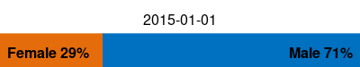
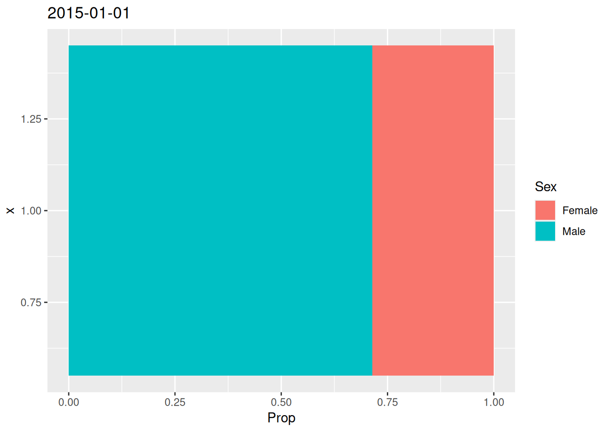
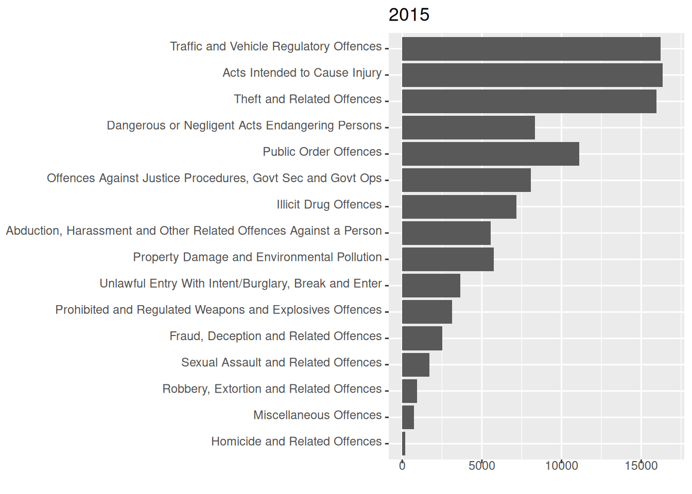
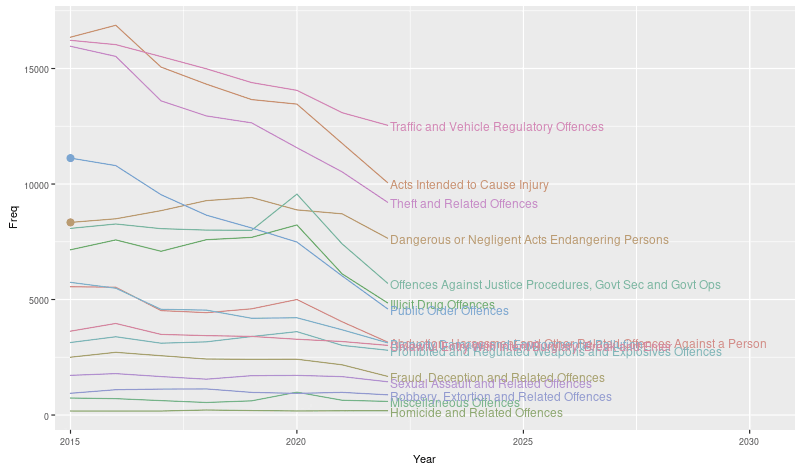
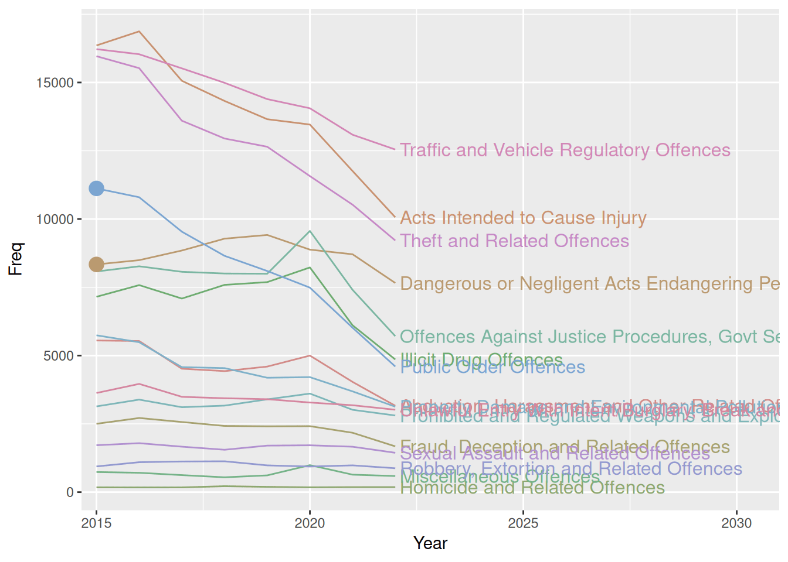
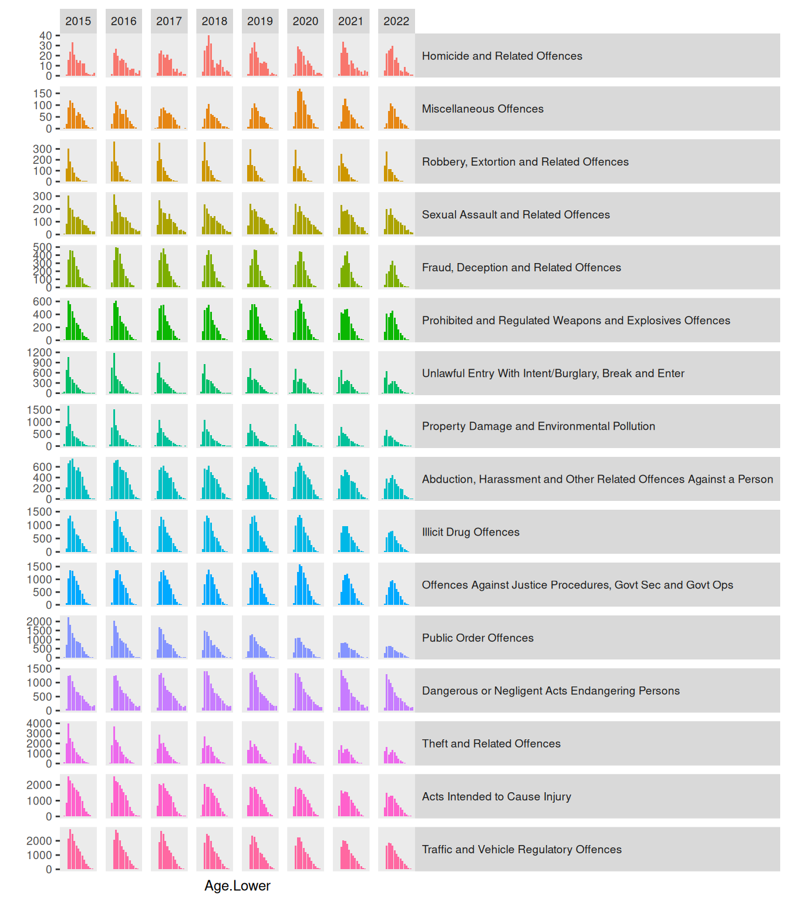
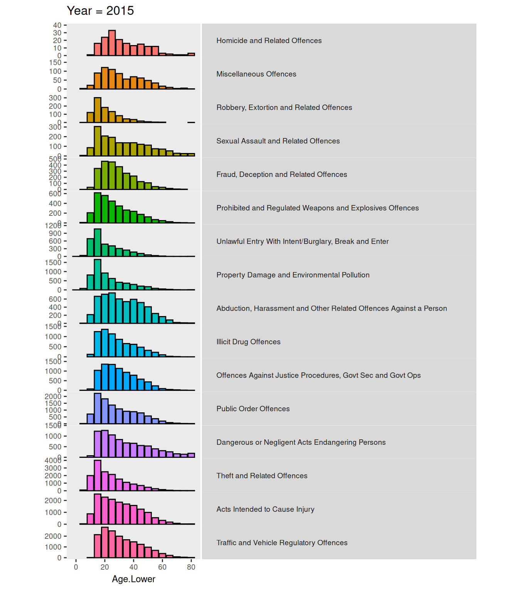
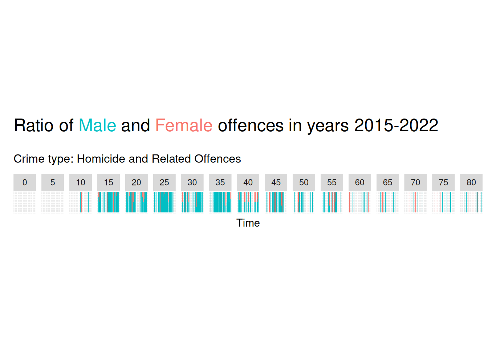

library(tidyverse)
library(grid)
library(magick)
library(gganimate)Lab6 - Animation
Loading packages.
The data and questions of interest
Data shows rows of incidents handled by the Police.
crime <- read.csv("nzpolice-proceedings.csv")
crime$Month <- as.Date(crime$Date)
crime$Year <- as.POSIXlt(crime$Date)$year + 1900
typeCount <- table(crime$ANZSOC.Division)
crime$Type <- factor(crime$ANZSOC.Division,
levels=names(typeCount)[order(typeCount)])
crime <- subset(crime, Year >= 2015)Create data with only youth offenders.
youth <- subset(crime, Age.Lower <= 15)Questions of interest
- How does the proportion of male versus female crimes change over time? (Questions 1 and 2)
- How does the number of incidents for each type of crime change over time? (Question 3 and 4)
- How does the number of incidents for each age group and each type of crime change over time? (Questions 5 and 6)
Data visualisations and questions
Question 1
We first create some data with the information needed to create the plot.
youthSexMonth <- t(apply(table(youth$Month, youth$SEX), 1,
function(x) x/sum(x)))
youthSexMonthDfrm <- as.data.frame(youthSexMonth) %>%
mutate(Month = rownames(youthSexMonth))We then create a function that can create each bar needed for the animation.
barRatio_grobTree <- function(
data = youthSexMonthDfrm[1, ],
bar_height = unit(1, "cm"),
cols = c(female = "#E46C0A", male = "#0070C0")) {
frate <- data["Female"]
mrate <- data["Male"]
flabel = paste0("Female ", round(frate * 100), "%")
mlabel = paste0("Male ", round(mrate * 100), "%")
fbar <- rectGrob(x = 0,
hjust = 0,
width = unit(frate, "npc"),
height = bar_height,
gp = gpar(col = cols["female"], fill = cols["female"]))
mbar <- rectGrob(x = 1,
hjust = 1,
width = unit(mrate, "npc"),
height = bar_height,
gp = gpar(col = cols["male"], fill = cols["male"]))
ftext <- textGrob(x = unit(2, "mm"),
label = flabel,
hjust = 0,
gp = gpar(fontface = "bold"))
mtext <- textGrob(x = unit(1, "npc") - unit(2, "mm"),
label = mlabel,
hjust = 1,
gp = gpar(fontface = "bold"))
grobTree(fbar, mbar, ftext, mtext)
}We then create a function that will create a bar together with the date above it.
ratiowtitle <- function(
data = youthSexMonthDfrm[1, ],
bar_height = unit(1, "cm"),
cols = c(female = "#E46C0A", male = "#0070C0")) {
args <- as.list(environment())
bar <- do.call(barRatio_grobTree, args)
grid.newpage()
pushViewport(
viewport(
layout = grid.layout(nrow = 2),
height = 2 * bar_height
)
)
pushViewport(
viewport(
layout.pos.col = 1,
layout.pos.row = 1
)
)
grid.text(data$Month)
upViewport()
pushViewport(
viewport(
layout.pos.col = 1,
layout.pos.row = 2
)
)
grid.draw(bar)
upViewport()
}Lastly create a function that will loop through all months and create the animation.
ratiowtitle_anim <- function(
data = youthSexMonthDfrm,
bar_height = unit(1, "cm"),
cols = c(female = "#E46C0A", male = "#0070C0"),
...
) {
resolution <- 96
sq_pr_cm <- resolution / 2.54
fig_height <- as.numeric(bar_height) * 2
pixel_height <- fig_height * sq_pr_cm
bars <- image_graph(
width = 400,
height = pixel_height,
res = resolution
)
for (i in 1:nrow(data)) {
ratiowtitle(data = data[i, ], bar_height = bar_height, cols = cols)
}
dev.off()
image_animate(bars, ...)
}
ratiowtitle_anim(optimize = TRUE)
Questions of interest
We can see that the proportion of female offenders goes down over time, but this visualisation makes it very hard to notice exactly what is happening through time, as we can see the proportion increasing and decreasing repeatedly, but it’s not possible to identify the individual changes.
Question 2
We create data in long format to be able to color by Sex as an aesthetic.
longYouthSexMonth <- youthSexMonthDfrm %>%
tidyr::pivot_longer(cols = c("Female", "Male"),
names_to = "Sex",
values_to = "Prop")We create the plot by using gganimate::transition_states with states specified as Month. To avoid any pause at any of the states, we specify state_length = 0.
ggplot(longYouthSexMonth, aes(x = 1, y = Prop, fill = Sex)) +
geom_col() +
coord_flip() +
ggtitle("{closest_state}") +
gganimate::transition_states(Month, state_length = 0)
Question 3
We create a bar plot and make it an animation with transition_states, making them fade between frames with enter/exit_fade, ensuring that we specify the group aesthetic explicitly to make it work.
ggplot(crime, aes(x = Type, group = Year)) +
geom_bar() +
coord_flip() +
labs(title = "{closest_state}", x = "", y = "") +
gganimate::transition_states(Year) +
gganimate::enter_fade() +
gganimate::exit_fade()
Regarding the question of interest with regard to number of incidents for crime types over time, seeing the trend for each crime type, this can take a while, as you have to focus on one crime type at a time through a loop (or possibly more) of the gif. It is possible to see from this animation that the overall trend is downward.
Question 4
Create data set of counts.
crimeYearType <- as.data.frame(table(crime$Year, crime$ANZSOC.Division))
crimeYearType$Year <- as.numeric(as.character(crimeYearType$Var1))
crimeYearType$Type <- crimeYearType$Var2
lastCount <- subset(crimeYearType, Year == 2022)Create function that creates a static line plot with an optional specification of categories to highlight with thicker lines and a point at the end for chosen years.
typeLabel <- function(data, coords) {
textGrob(
data$label,
x = unit(coords$x, "npc") + unit(1, "mm"),
y = coords$y,
just = c(0, .5),
gp = gpar(col = data$colour)
)
}
linePlot <- function(
highlightYear = NULL,
highlightCats = unique(
grep("^(Public|Dangerous)",
data$Type,
value = TRUE
)
),
data = crimeYearType,
colors = NULL) {
if (is.null(colors)) {
n_cats <- length(unique(data$Type))
colors <- colorspace::desaturate(scales::pal_hue()(n_cats), 0.5)
}
lastCount <- subset(data, Year == 2022)
highlighted <- data %>%
filter(Type %in% highlightCats)
toHighlightYear <- subset(highlighted, Year <= highlightYear)
onlyHighlightYear <- subset(highlighted, Year == highlightYear)
p <- ggplot(data, aes(x = Year, y = Freq, color = Type, group = Type)) +
geom_line() +
scale_x_continuous(expand = expansion(add = c(0, 9), mult = c(.05, 0))) +
scale_color_manual(values = colors) +
gggrid::grid_group(
typeLabel,
aes(label = Type),
data = lastCount
) +
theme(legend.position = "none")
if (!is.null(highlightYear)) {
p <- p +
geom_point(data = onlyHighlightYear, size = 3)
if (highlightYear != 2015) {
p <- p +
geom_line(data = toHighlightYear, linewidth = 1.3)
}
}
return(p)
}Creating the animation with Magick
Create function that loops over the function above, highlighting one year ahead at a time.
line_anim <- function(
highlightYears = 2015:2022,
highlightCats = unique(
grep("^(Public|Dangerous)",
data$Type,
value = TRUE
)
),
data = crimeYearType,
...) {
lines <- magick::image_graph(
800,
472
)
for (i in highlightYears) {
p <- linePlot(highlightYear = i, highlightCats = highlightCats, data = data)
print(p)
}
dev.off()
magick::image_animate(lines, ...)
}
line_anim(optimize = TRUE, fps = 1)
Creating the animation with gganimate
We create the animation superimposed onto a static image by making sure that the variable we give to gganimate::transition_reveal is different than the one used as an aesthetic for the part of the plot we want to keep static.
To avoid a message when creating the geoms, we need to duplicate the first row of data.
Tried a few different things, I have no idea why the lines are so jagged.
highlightCats <- unique(grep("^(Public|Dangerous)", crimeYearType$Type, value = TRUE))
high <- crimeYearType %>%
filter(Type %in% highlightCats) %>%
rename(Year_new = Year)
high <- rbind(high[1, ], high)
linePlot() +
geom_line(aes(x = Year_new), linewidth = 2, data = high) +
geom_point(aes(x = Year_new), size = 4, data = high) +
gganimate::transition_reveal(Year_new)
Questions of interest
We see that the overall trend for all crime types is downward, though it’s much more visible by this plot than the previous that some crime types have short upward trends throughout the years of the data. The animation does a good job of highlighting the 2 categories which show 2 different trajectories - one with a monotonically decreasing trend that is quite steep and one that actually starts on an upward trend that then turns downward from 2019.
Question 5
We create this plot by making a bar plot with facet_grid to stratify by both year and crime type. We specify angle = 0 for strip.text.y in theme to ensure labels are readable.
ggplot(crime, aes(x = Age.Lower, fill = Type)) +
geom_bar(show.legend = FALSE) +
facet_grid(Type ~ Year, scales = "free_y") +
labs(y = "") +
theme(strip.text.y = element_text(angle = 0, hjust = 0),
text = element_text(size = 9),
axis.text.x = element_blank(),
axis.ticks.x = element_blank(),
panel.grid = element_blank()
)
This visualisation makes it hard to answer the question of whether the number of incidents for each age group and crime type changes over time. We can, however, see some distribution becoming bimodal in time. Fx. “Theft and Related Offences” an “Unlawful Entry with Intent/Burglary, Break and Enter” transform from being a distribution with a single mode at around age 20 to having a mode a both 20 and around 40. For “Fraud, Deception and Related Offences” the distribution does not become bimodal, but the mode simply shifts, again from about 20 to about 40.
Question 6
We create a bar plot and make it an animation with transition_states, making them fade between frames with enter/exit_fade, ensuring that we specify the group aesthetic explicitly to make it work.
ggplot(crime, aes(x = Age.Lower, fill = Type, group = Year)) +
geom_bar(colour = "black", show.legend = FALSE) +
facet_grid(rows = vars(Type), scales = "free_y") +
theme(strip.text.y = element_text(angle = 0, hjust = 0,
margin = margin(l = .5, r = 1, unit = "cm")),
panel.spacing.y = unit(0, "cm"),
panel.grid = element_blank(),
aspect.ratio = 1/4,
text = element_text(size = 9),
plot.title = element_text(size = 12)) +
labs(title = "Year = {closest_state}", y = "") +
gganimate::transition_states(Year) +
gganimate::enter_fade() +
gganimate::exit_fade()
This animation does not show new information in regards to answering the question as we did above in the previous question. However, it is much easier to identify the changes in this animation by being presented information bit by bit. It is also easier to judge the relative difference when the change happens in the same “location”.
Challenge
I create a quite simple animation that will cycle through all crime types, shwoing data from each crime type one at a time with the specification in the subtitle of the plot.
For some reason, the subtitle writing the crime type and the plot are not synced when changing. I tried changing
transition_lengthandstate_lengtharguments intransition_states, but nothing seemed to fix the issue.
crimeAgeType <- function(data = crime, colors = NULL, animate = TRUE) {
if (is.null(colors)) {
colors <- setNames(scales::pal_hue()(2), c("Female", "Male"))
}
p <- ggplot(data, aes(x = Month, fill = SEX)) +
geom_bar(position = "fill", show.legend = FALSE) +
scale_fill_manual(values = colors) +
labs(x = "Time", y = "",
title = paste0(
"Ratio of <span style = 'color:",
colors["Male"],
";'>Male</span> and <span style = 'color:",
colors["Female"],
";'>Female</span> offences in years 2015-2022"
)
) +
labs(subtitle = "Crime type: {closest_state}") +
theme(
plot.title = ggtext::element_markdown(size = 18, margin = margin(0,0,20,0)),
plot.subtitle = element_text(size = 12, margin = margin(0,0,5,0)),
axis.text = element_blank(),
axis.ticks = element_blank(),
aspect.ratio = 1) +
facet_wrap(~ Age.Lower, nrow = 1)
if (animate)
p <- p +
labs(subtitle = "Crime type: {closest_state}") +
gganimate::transition_states(Type)
return(p)
}
chal <- crimeAgeType()
gganimate::animate(chal, fps = 1)
Overall summary
We can use the magick package to create animation picture-by-picture, or we can use gganimate for a more high-level interface to creating animation of data visualisations.
We see that using animation to add a dimension (time) means we can display more information - as showing all the information we want to show with a static image might be too much. Furthermore, the use of animation makes for a pre-attentive pop out that catches the eye and very clearly shows change in data across a variable.
Question 4 showcases very well the power of combining a static element together with an animation. By doing the highlighting in this way, data from the entire time period is visible the entire time by the static plot, but the animation creates a pre-attentive pop out that really highlights those categories.